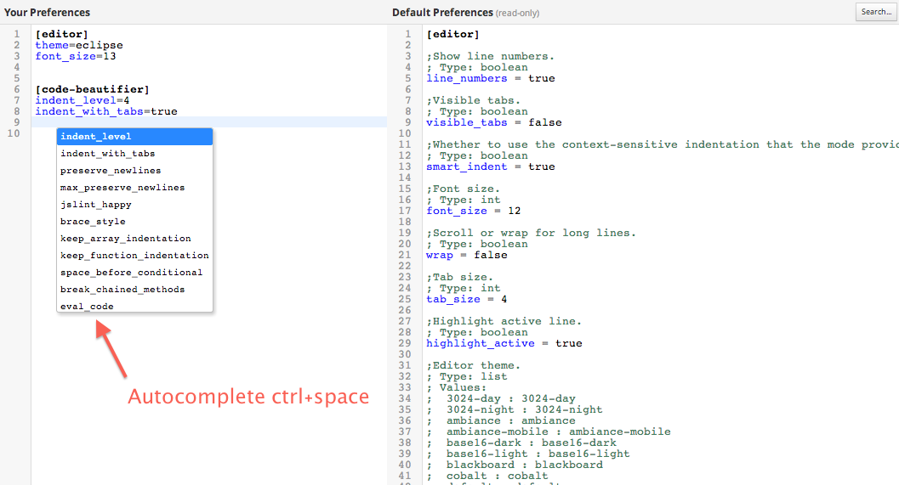
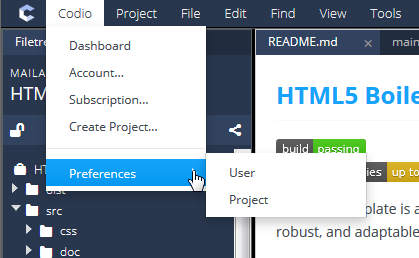

User Preferences¶
Codio offers a full collection of settings that apply to only you when you’re logged in. These user preferences cover all aspects of Codio usage, from code editor settings (tab stops, indentation, colors, fonts, etc.) to keyboard shortcuts.

You can customize these preferences at the user level (only affects you) or the project level (affects everyone using the project). For more information see Project Preferences. When logged in to Codio, the default preferences are used first, then any user preference overrides are applied, and finally any project-level preferences are applied.
You access the User Preferences from the Codio > Preferences > User menu option when you are in a project.

Default Preferences are displayed in the right column and are read only.
Your (User) Preferences are displayed in the left column. When your account is created, the Your Preferences column is empty until you specify an override to the default preferences.
Below is an example of user settings that override the Codio default preferences:
[editor]
theme=eclipse
font_size=13
[code-beautifier]
indent_level=4
indent_with_tabs=true
More information¶
For more information about specific settings, see the relevant topic: